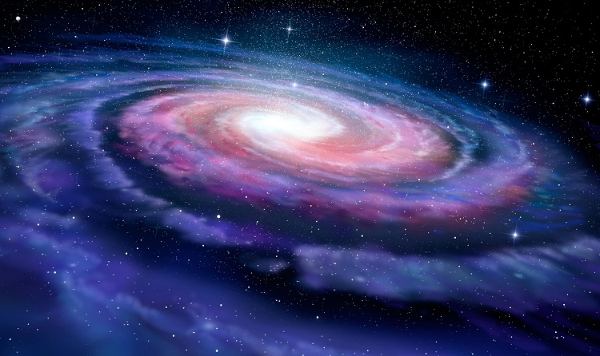

Aby było możliwe utworzenie się gwiazdy muszą być najpierw obłoki molekularne. W ich wnętrzu cząsteczki ulegają zapadnięciu pod wpływem grawitacji i w konsekwencji zagęszczeniu. W wyniku tego zjawiska powstaje powstaje protogwiazda. Powstała protogwiazda ulega skurczaniu, w wyniku czego w jej wnętrzu temperatura i ciśnienie wzrasta. Gdy wzrośnie odpowiednio wysoko pod jej wpływem atomy wodoru spalają się i przemienią się w atomy helu. Temperatura, jaka jest potrzebna do zajścia tych reakcji jest zależna od masy protogwiazdy.
Im większa masa gwiazdy tym więcej promieniowania wysyła, a co za tym idzie, jaśniej świeci. Na niebie gwiazdy wydają się być białe lub niebieskawe. Gwiazdy o małych masach świecą czerwonym blaskiem. Od momentu rozpoczęcia reakcji termojądrowych wewnątrz protogwiazdy, czyli zamiany wodoru w hel, staje się ona gwiazdą i wchodzi w ciąg główny - jest to najdłuższy etap życia gwiazdy (zajmuje około 90% długości jej istnienia). Od tego momentu również ilość wodoru zaczyna się zmniejszać, ponieważ to on jest niejako „paliwem” gwiazdy, którego ma ograniczoną ilość. Bez niego nie mogłaby promieniować, bo to on jest zamieniany w hel. Tempo procesu ewolucji gwiazdy zależy od masy początkowej protogwiazdy. Im masywniejsza protogwiazda tym ewolucja zachodzi szybciej , a ich istnienie kończy się wybuchem.
Po wyczerpaniu się zasobów wodoru wewnątrz gwiazdy następuje jej przekształcenie, w zależności od masy, w Czerwonego Olbrzyma lub Nadolbrzyma.
Po wykorzystaniu całego zapasu wodoru gwiazda powoli przestaje promieniować, a jej jądro zaczyna się kurczyć. Temperatura jest coraz większa i zaczyna spalać się również jej otoczka. Gwiazda zaczyna świecić jaśniej niż w ciągu głównym, a jej otoczka pali się na czerwono. Następnie olbrzymy i nadolbrzymy zamieniają się w Gwiazdę Zmienną, której dalsze losy zależą od masy.
Gwiazdy o masie znacznie większej od masy Słońca ulegają kosmicznej eksplozji czyli Supernowej, podczas której uwalniana jest bardzo duża ilość energii.
Gdy reakcje we wnętrzu jądra takiej gwiazdy całkowicie ustaną po wybuchu staje się ona gwiazdą zdegenerowaną, w przypadku masywnych są to Gwiazdy Neutronowe.
Zapadają się one w sobie, natomiast otoczka, jaka została po Supernowej gwałtownie się zapala i uderzając w powierzchnię Gwiazdy Neutronowej powodując wybuch. Jeśli gwiazda neutronowa ma masę od 3 do 5 mas Słońca w wyniku wspomnianego wybuchu powstaje Czarna Dziura.
Gwiazdy o masie zbliżonej do masy Słońca z gwiazdy zamiennej tworzą Białe Karły, które cały czas się kurczą. Podczas tego procesu zostaje odrzucona zewnętrzna warstwa i odsłania się jądro. Jest to warstwa zbudowana z gazów nazywana Mgławicą Planetarną, która świeci, bo jest intensywnie ogrzewana przez jądro.
Biały Karzeł jest bardzo skurczonym wcześniejszym olbrzymem, który w dalszym ciągu powoli się kurczy i ochładza świecąc ciepłem, które wcześniej nagromadziło.
Gdy nagromadzone ciepło się skończy białe karły zamieniają się w Brązowe Karły, które nie mają wystarczającej temperatury wewnątrz siebie, że nie emitują światła.
ETAPY ZYCIA GWIAZDY
Jaki pierwiastek jest "paliwem" gwiazdy?
Wodor i hel Wodor i powietrze HelIle zajmuje najdluzszy etap zycia gwiazdy?
75% 80% 90%Jaka gwiazda polozona jest najblizej Ziemi?
Ksiezyc Slonce MarsOd czego zalezy dlugosc zycia gwiazdy?
Jej wielkosci Masy Jej temperatury